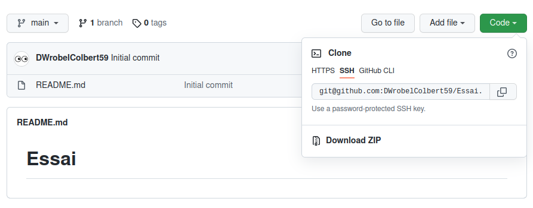

Le jeu de la Bataille
Des outils pour collaborer
GitHub est un service web d’hébergement et de gestion de développement de logiciels, utilisant le logiciel de gestion de versions Git. Il permet de développer de façon coopérative un même projet et de simplifier la mise en commun de fragments de code apportés par chaque collaborateur.
Important
GitHub est depuis 2018, une propriété de Microsoft.
Bienvenue sur GitHub
Commencer par vous rendre sur le site GitHub et y créer un compte.
Attention
Vous choisirez un nom d'utilisateur de la forme InitialePrénomNomColbert59.
Par exemple, Jacques Chirac devrait choisir JChiracColbert59.
Une fois inscrit sur GitHub, rechercher l’utilisateur DWrobelColbert59 et suivez cette personne.
Un premier projet
Créer à présent un nouveau projet en cliquant sur New repository dans le menu en haut à droite.
Donner lui le nom Essai, le rendre public et ajouter un fichier README.
Un des intérêts de GitHub est de pouvoir synchroniser un Projet présent sur le site avec un dossier local de l’ordinateur que vous utiliser. Pour cela, il faut permettre à votre ordinateur de se connecter à votre session GitHub. On utilise alors une clé SSH.
Étapes à suivre
- Ouvrir un terminal (Ctrl+Alt+T)
-
Entrer la commande
Génération d'une clé SSH -
Valider trois fois de suite
-
Entrer la commande
Copier le contenu dans le presse-papier -
Dans les paramètres de votre compte GitHub, sélectionner Clé SSH
- Choisir New SSH Key et coller le contenu du presse-papier à l’emplacement adéquat.
-
Entrer la commande
Tentative de connexion
Il est temps à présent de récupérer une version locale de votre projet Essai.
Étapes à suivre
- Ouvrir un terminal (Ctrl+Alt+T)
-
Placer vous dans Documents
Déplacement -
Créer un répertoire GitHub
Création d'un répertoire -
Placer vous dans GitHub
Déplacement -
Dans votre projet Essai sur GitHub, cliquer sur Code puis SSH puis copier le lien proposé.
 -
Retourner sur le Terminal et entrer la commande
Clonage -
Observer le dossier Essai qui vient d’être créé dans le dossier GitHub
Modification du projet local
Étapes à suivre
-
Ouvrir Thonny et coller le code suivant :
-
Enregistrer ce fichier dans votre dossier Essai avec le nom de votre choix.
Pour mettre à jour votre projet en ligne, procéder comme suit :
Étapes à suivre
- Réaliser un clic droit dans votre dossier Essai et choisir Ouvrir avec un Terminal
-
Taper la commande :
Chargement tampon -
Taper la commande :
Ajout d'un message -
Taper la commande :
Envoyer le tout
Vérifier à présent que votre projet en ligne contient un nouveau fichier.
Modification du projet en ligne
Lorsque vous collaborez, un partenaire peut modifier un des fichiers de votre dépôt. Il est alors important que vous puissiez travailler avec la dernière version de votre projet.
Étapes à suivre
- Rendez-vous sur votre projet sur GitHub
-
Modifier le fichier python que vous avez inséré et ajoutez-y le code :
-
Sauvegarder le tout
-
Dans le terminal (dans le dossier Essai) tapez la commande :
Récupérer le tout -
Observer votre fichier python.
Le jeu de la Bataille
Commencer par aller sur le profil de l'utilisateur @DWrobelColbert59 et cliquez sur son projet 2024-bataille.
Il est possible de récupérer une copie de ce projet en le Forkant.
Pour cela cliquer sur Fork et valider l'ensemble.
Étapes à suivre
- Il vous reste à cloner ce projet pour en obtenir une version locale.
- Complétez ensuite le code proposé.
- N'oubliez pas de synchroniser votre travail avec la version en ligne.